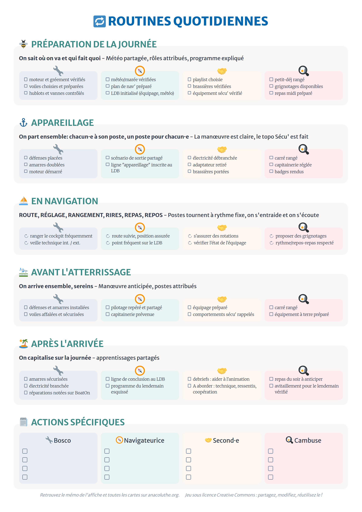
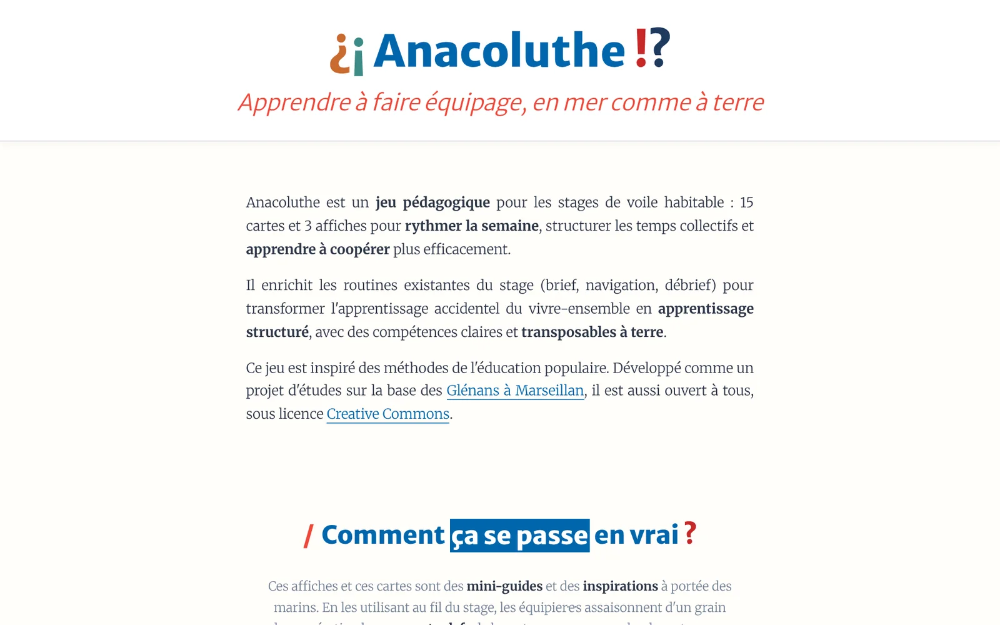
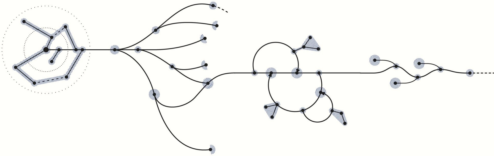

¿¡ Anacoluthe !?
Soutenance UC1-UC2 · BPJEPS voile habitable
Comment donner aux moniteurices en stage
embarqué
les moyens d'animer le vivre-ensemble
dans un contexte qui génère autant de tensions
que d'opportunités d'apprentissage ?
D'où vient la question
Les rapports de mer que le responsable croisière m'a confiés au début du projet décrivent très souvent la même chose : des tensions humaines qui finissent en incidents techniques.
La technique, elle, est très outillée.
Le vivre-ensemble ne l'est pas.
Ce que les référentiels demandent déjà
Les stagiaires · carte de progression FFVoile


Les moniteurices · CQP-IV


Le projet n'ajoute pas une compétence au programme. Il donne à travailler, et à voir, ce qui y est déjà.
« … par la mer, … à la vie collective »


Extraits des statuts des Glénans.

Le terrain
Association d'éducation populaire fondée en 1947.
Six bases, 19 000 adhérents, près de 900 moniteurices.
Marseillan, étang de Thau.
2 000 stagiaires par an, six jours par stage.
Une centaine de moniteurices, aux statuts très variés.
Deux publics, deux niveaux
Le projet
former et outiller celles et ceux qui encadrent
Les moniteurices
animer le vivre-ensemble, et le faire apprendre
Les stagiaires
apprendre à coopérer en même temps qu'à naviguer
bénévoles occasionnels un filet de sécurité
contractuels CQP une légitimité au-delà de l'autorité technique
salariés permanents, en rôle RTQ moins de sollicitations
Les stagiaires : jeunes adultes en été, actifs de 35 à 60 ans hors saison, stages techniques avancés au printemps et à l'automne.
Comment travailler ?
Ni mandat spécifique, ni budget temps-argent établi.
Un statut d'apprenti. Une base qui ne peut pas donner de temps dédié.
Qui approuve quoi
périmètre, objectifs, planning, formation→le tuteur pédagogique
budget et intervenants→le chef de base
J'exécute et je rends compte sur toutes les lignes.
Le projet a donc avancé par preuve d'usage, pas par décision institutionnelle planifiée.
Le diagnostic a servi à décider
14 entretiens, 3 ateliers pair-à-pair, des débriefs de saison.
Des besoins par profil, et trois objectifs qui en découlent :
- OS1Réduire les dysfonctionnements d'équipage sources d'incidents
- OS2Contribuer à la mission d'éducation populaire des Glénans
- OS3Améliorer la progression technique sur les items d'organisation collective et de sens marin
Ce que le projet apporte
Du vocabulaire et des compétences pour animer le vivre-ensemble.
Former
des ateliers, sur des créneaux qui existaient déjà

Outiller
des objets pensés pour les rituels du stage

Diffuser
un site, des fichiers libres, imprimables à la demande
Voilà la V5. On reviendra sur le chemin qui y mène.
Une boîte à outils à quatre emplacements
un outil formel là où on improvisait
distribuer l'organisation
une forme pour les moments clefs
intervenir sans improviser
Chaque pièce s'utilise seule. À bord : 3 affiches, 4 rôles, 2 moments. En ligne : 5 moments, 4 jokers, et 4 mémos qui expliquent les affiches quand personne ne vous les a présentées.
Les affiches embarquées
Ce qui est répété chaque matin s'affiche,
et ne se redit plus.

Les rôles coopératifs
Tout reposait sur la moniteurice.
Quatre fonctions tournantes distribuent l'organisation.
Les sept moments
La semaine est déjà faite de moments clefs.
Sept cartes leur donnent une forme, et en font des moments de coopération.
Les quatre jokers
Un protocole au lieu d'une improvisation.
Le dispositif ne supprime pas le conflit.
Il en fait un conflit qu'on traverse.
Le site


Les kits sont téléchargeables et imprimables à la demande.
Trois écoles l'ont adopté sans démarchage.
Ce qui compte, c'est le chemin
L'outil est le prétexte.
Le concevoir avec elles les a formées.
Le diffuser a ouvert des conversations dans la base.
Quatre phases

Ce que j'ai animé
Avec les moniteurices
- co-concevoir l'outil
- les former
- encadrer l'usage en escadre
Avec les stagiaires
- animer des stages avec le kit à bord
- animer des stages sans kit
Cinq versions, neuf mois
La forme n'a pas été décidée : elle est sortie du premier prototypage.
Pilotage : des cycles de quatre à six semaines, quatre critères d'arbitrage, une règle d'arrêt. Pas un planning de livrables.
La co-conception
Les moniteurices ont fabriqué le dispositif avec moi.
En fabriquant, elles se sont formées.
Nommer une tension, choisir entre deux cartes, défendre un choix devant le groupe : c'est déjà la compétence qu'on veut transmettre.
Les ateliers de formation
- Arpentage · co-développement · apports sur la coopération
- Quatre ateliers de deux heures : douze des vingt-deux moniteurices formées
- Annoncés aux démarrages du samedi, pour le vendredi suivant

Avec quels moyens ?
272,5 h de portage estimées, pas relevées · ≈ 10 000 € valorisés, aucun euro décaissé
L'outil de la base
- Huit bateaux équipés durablement, le marque-page dans le livre de bord
- Kits et documentation en ressourcerie, aux côtés des autres supports
- Une partie des matériaux de démarrage rénovés
L'écart au prévu
Trois contraintes sous-estimées, dont ma propre disponibilité.
Cinq voies de formation, dont trois nées de ces contraintes.
Deux ne sont pas transposables.
Ce que ça mesure
La formation fait l'appropriation.
4 des 6 moniteurices interrogées l'intègrent aux routines,
2 s'arrêtent aux affiches.
68 % contre 27 %
« Les tensions, quand il y en a eu, ont été exprimées avant de dégrader le climat »
43 questionnaires (28 avec kit, 15 sans) · 9 entretiens
Le questionnaire sans kit est un contrepoint, pas une comparaison.
Le cap à dix ans
« En 2035, l'association Les Glénans est un lieu d'expérimentation de nouveaux possibles »
Cap voté par le conseil d'administration, novembre 2025.
Trois axes. Deux concernent directement la filière croisière :
l'autonomie et l'interdépendance par la navigation,
faire société dans un esprit d'inclusion et de fraternité.
Les stages les font vivre. Ils ne les outillent pas.
Ce qui reste
L'usage est installé à Marseillan. Le portage ne l'est pas.
Il manque trois choses :
- un relais nommé et mandaté
- un temps de formation inscrit dans un plan, pas prélevé sur le temps porteur
- une maintenance assurée
Ce qui tient, ce sont des personnes, et c'est ainsi que l'association se transmet.
Apports et limites
Comment donner aux moniteurices en stage embarqué les moyens d'animer le vivre-ensemble dans un contexte qui génère autant de tensions que d'opportunités d'apprentissage ?
- Une formation qui vise leur autonomie d'animation
- Une boîte à outils utilisable sans formation préalable
- La modification pérenne des outils et pratiques existantes
Animer le vivre-ensemble, et faire des tensions un objet de travail plutôt qu'un non-dit.
La limite : un recueil déclaratif, et les plus motivées sont aussi les formées.
Ce que je conduirais autrement : chiffrer la formation informelle dès la conception
· nommer un relais avant la V5 · saisir le CEB plus tôt.